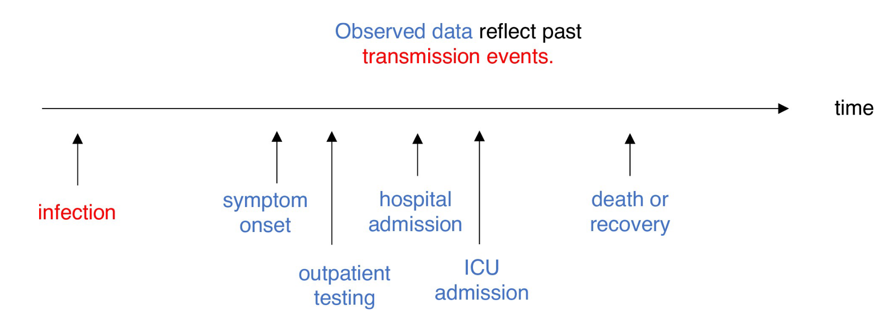
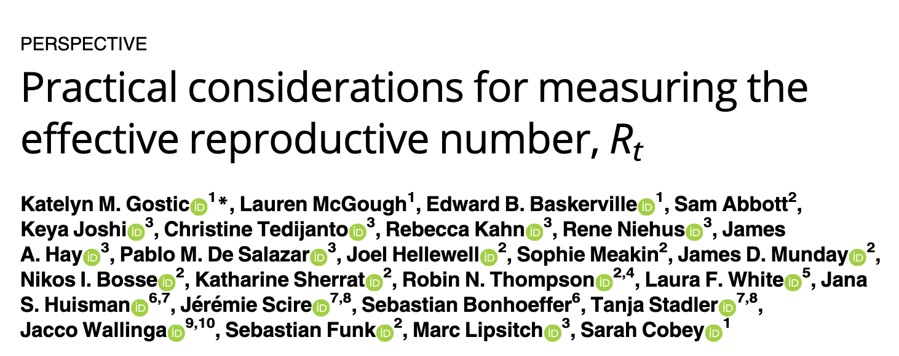
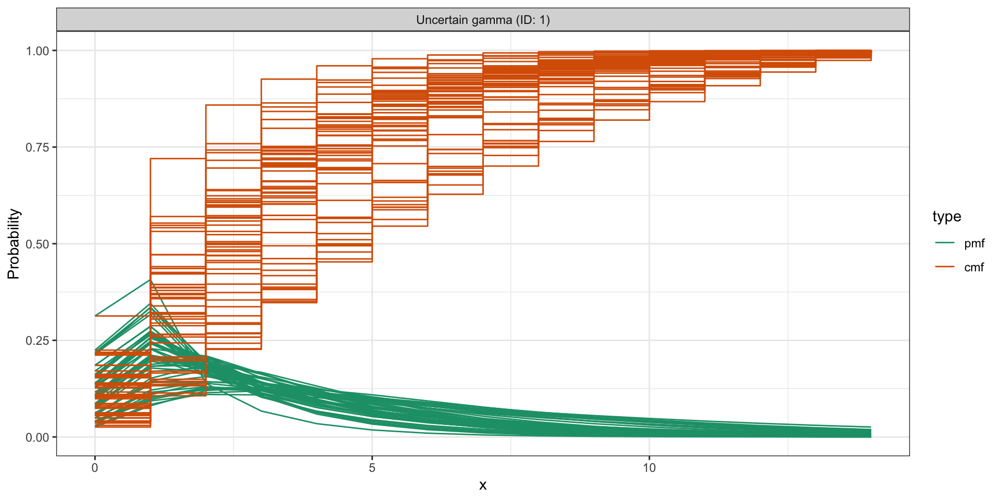
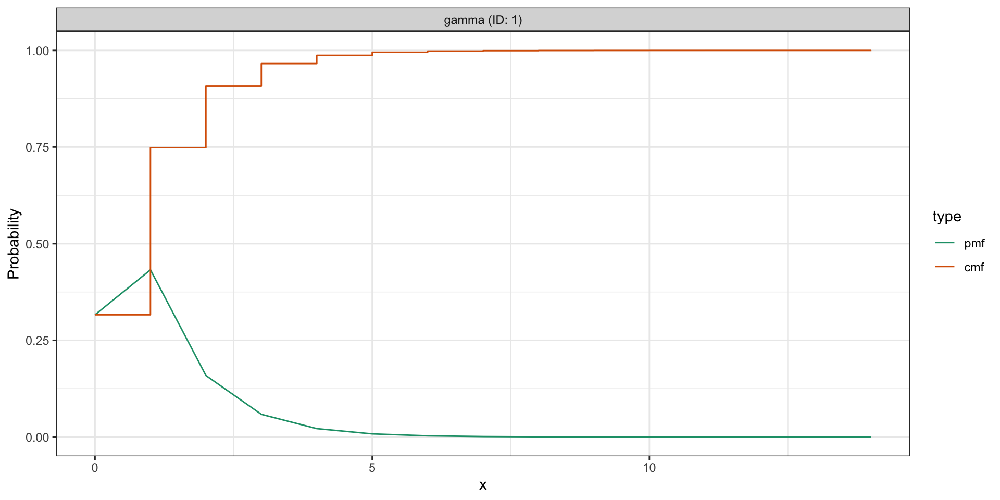
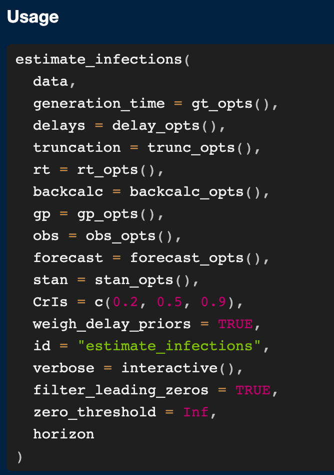
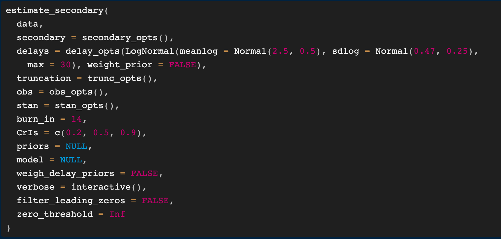
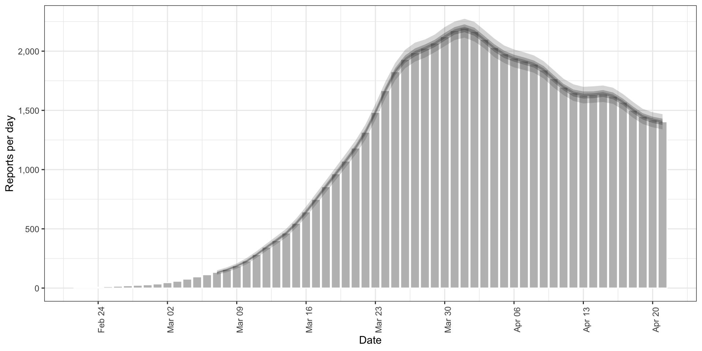
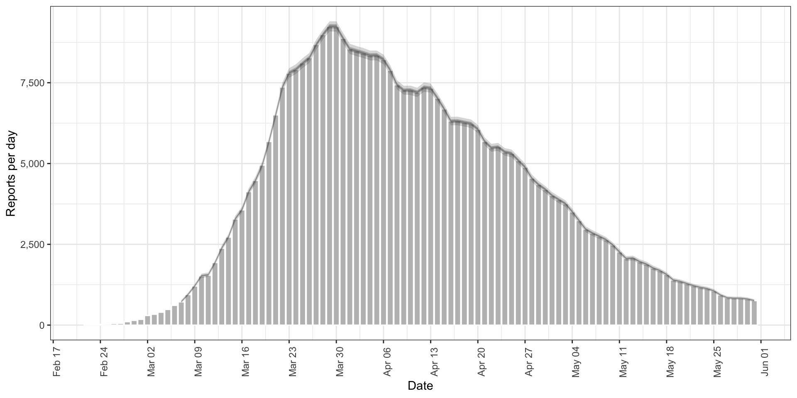

{kind=link}
date confirm
<Date> <num>
1: 2020-02-22 14
2: 2020-02-23 62
3: 2020-02-24 53
4: 2020-02-25 97
5: 2020-02-26 93
6: 2020-02-27 78TRACEing EpiNow2
Forecasting infectious disease trends with EpiNow2
Dr. James Mba Azam
Research Software Engineer
Epiverse-TRACE Initiative, London School of Hygiene & Tropical Medicine
2025-08-14
Background
During outbreaks, monitoring and evaluation depend on available reported data (cases, hospitalisations, deaths, etc).
But … reported data often tip of the iceberg.
Issues with reported data
Data delays must be accounted for. Source: Gostic et al., 2020
Using \(R_t\) for better outbreak monitoring and evaluation
Time-varying reproduction number, \(R_t\): average number of secondary infections caused by each infectious individual at time \(t\) in a population where some individuals may not be susceptible.
\(R_t\) can:
- account for delays, and
- reveal variations in transmissibility.
\(R_t\) used to retrospectively and in real-time assess whether an epidemic is increasing, decreasing, or steady.
How do we estimate \(R_t\)?
\[\begin{equation} R_t = \dfrac{I_t}{\sum_{\tau = 1}^{g_\mathrm{max}} g(\tau | \theta_g) I_{t - \tau}} \end{equation}\]
- Requires:
- reported cases, \(I\), and
- Generation time distribution, \(g(\theta)\): time between primary and secondary infection
- Implemented in
{EpiNow2}and other packages.
Introducing EpiNow2
What does EpiNow2 do?
- Estimates/forecasts:
- infections,
- time-varying reproduction number (\(R_t\)),
- secondary outcomes (hospitalisations, deaths, etc)
- growth rate and doubling time
- Simulates:
- infection trajectories,
- secondary outcomes (hospitalisations, deaths, etc)
EpiNow2 implements \(R_t\) estimation best practices
- Adjusts for delays and right truncation
- Accounts for incomplete data
- Uncertainty in generation time distribution
- Appropriate smoothing windows

{EpiNow2} under the hood
- Workhorse: Stan
- Two
Stanbackends:{rstan}and{cmdstanr} - Model fitting with
stan’s MCMC algorithms
- Two
- Faster but unstable non-MCMC methods (variational inference, laplace, and pathfinder)
EpiNow2’s model functions
Estimation functions
estimate_infections(): estimate infections and \(R_t\) from reported casesestimate_secondary(): estimate secondary outcomes (hospitalisations, deaths, etc) from primary observations (cases)estimate_truncation(): estimate right truncation distribution from vintage/snapshot data for nowcasting
Forecasting functions
forecast_infections(): forecast infections trajectoriesforecast_secondary(): forecast secondary outcomes (hospitalisations, deaths, etc) from primary observations (cases)
Simulation functions
simulate_infections(): simulate infections and \(R_t\) from reported casessimulate_secondary(): simulate secondary outcomes (hospitalisations, deaths, etc) from primary observations (cases)
General workflow
Inputs (data)
data.frameof observations.
Inputs (other arguments)
Most arguments specified as distributions.
With
_opts()function:- generation time distribution:
generation_time_opts()/gt_opts() - delay distribution:
delays_opts() - observation model:
obs_opts()
- generation time distribution:
- Distributions specified using
EpiNow2'sbespoke distribution interface:Normal(),LogNormal(),Gamma(),Fixed(), andNonParametric()
Example uncertain distribution
Example certain distribution
Models showcase
estimate_infections(): estimate infections and \(R_t\) from reported cases
Underlying models
- Mechanistic model (Renewal equations model)
\[\begin{equation} I_t = R_t \sum_{\tau = 1}^{g_\mathrm{max}} g(\tau | \theta_g) I_{t - \tau} \end{equation}\]
- Non-mechanistic/direct infections model:
- Removes prior on \(R_t\) time evolution.
estimate_infections() function signature
estimate_infections() workflow
# load the EpiNow2 package
library(EpiNow2)
# Setup cores for parallel processing
options(mc.cores = min(parallel::detectCores(), 4))
# get example case counts
reported_cases <- example_confirmed[1:60]
# set an example generation time. In practice this should use an estimate
# from the literature or be estimated from data
generation_time <- Gamma(
shape = Normal(1.3, 0.3),
rate = Normal(0.37, 0.09),
max = 14
)
# set an example incubation period. In practice this should use an estimate
# from the literature or be estimated from data
incubation_period <- LogNormal(
meanlog = Normal(1.6, 0.06),
sdlog = Normal(0.4, 0.07),
max = 14
)
# set an example reporting delay. In practice this should use an estimate
# from the literature or be estimated from data
reporting_delay <- LogNormal(mean = 2, sd = 1, max = 10)
# set an example prior for the reproduction number
rt_prior <- LogNormal(mean = 2, sd = 0.1)
# for more examples, see the "estimate_infections examples" vignette
estimate_infections_res <- estimate_infections(
reported_cases,
generation_time = gt_opts(generation_time),
delays = delay_opts(incubation_period + reporting_delay),
rt = rt_opts(prior = rt_prior)
)Output (summary)
measure estimate
<char> <char>
1: New infections per day 2219 (1373 -- 3557)
2: Expected change in reports Likely decreasing
3: Effective reproduction no. 0.89 (0.72 -- 1.1)
4: Rate of growth -0.03 (-0.096 -- 0.033)
5: Doubling/halving time (days) -23 (21 -- -7.2)Output (Plots)
- Note: Plots are
ggplot2objects, so can be customised
The default model is customisable
- Notable:
- Non-mechanistic/direct infections model, set
rt = NULL - Turn off Gaussian process, set
gp = NULL - Don’t adjust for delays (default), equivalent to
{EpiEstim}model
- Non-mechanistic/direct infections model, set
Using the non-mechanistic model
# load the EpiNow2 package
library(EpiNow2)
# Setup cores for parallel processing
options(mc.cores = min(parallel::detectCores(), 4))
# for more examples, see the "estimate_infections examples" vignette
estimate_infections_nm_res <- estimate_infections(
reported_cases,
generation_time = gt_opts(generation_time),
delays = delay_opts(incubation_period + reporting_delay),
rt = NULL # non-mechanistic/direct infections model
)Output (summary)
measure estimate
<char> <char>
1: New infections per day 2604 (2551 -- 2646)
2: Expected change in reports Decreasing
3: Effective reproduction no. 0.91 (0.87 -- 0.94)
4: Rate of growth -0.024 (-0.025 -- -0.022)
5: Doubling/halving time (days) -29 (-32 -- -28)Modelling temporally aggregated data
{EpiNow2}can also model temporally aggregated data, e.g., weekly or monthly counts.Data needs to have an
accumulatecolumn.fill_missing()helper function to generate data compatible with the package.
# load the EpiNow2 package
library(EpiNow2)
library(ggplot2)
# Setup cores for parallel processing
options(mc.cores = min(parallel::detectCores(), 4))
# Load example weekly case counts
cases_weekly <- readRDS("data/example_aggregate_data.rds")
# Visualise the data
p <- ggplot(cases_weekly, aes(x = date, y = confirm)) +
geom_col() +
scale_y_continuous(labels = scales::comma) +
scale_x_date(date_labels = "%b-%d", date_breaks = "2 weeks") +
labs(title = "Weekly case counts", x = "Date", y = "Cases")# Create compatible data for EpiNow2
cases_weekly_complete <- fill_missing(
cases_weekly,
missing_dates = "accumulate",
missing_obs = "accumulate"
)
head(cases_weekly_complete, 10)Key: <date>
date confirm accumulate
<Date> <num> <lgcl>
1: 2020-02-22 NA TRUE
2: 2020-02-23 NA TRUE
3: 2020-02-24 NA TRUE
4: 2020-02-25 NA TRUE
5: 2020-02-26 NA TRUE
6: 2020-02-27 NA TRUE
7: 2020-02-28 647 FALSE
8: 2020-02-29 NA TRUE
9: 2020-03-01 NA TRUE
10: 2020-03-02 NA TRUEOutput (summary)
measure estimate
<char> <char>
1: New infections per day 206 (107 -- 373)
2: Expected change in reports Likely decreasing
3: Effective reproduction no. 0.94 (0.71 -- 1.2)
4: Rate of growth -0.018 (-0.098 -- 0.055)
5: Doubling/halving time (days) -38 (13 -- -7.1)Estimate secondary observations from primary observations
estimate_secondary() function signature
estimate_secondary() workflow
- Incidence relationship, e.g., deaths from cases.
# load packages
library(data.table)
library(EpiNow2)
# Setup cores for parallel processing
options(mc.cores = min(parallel::detectCores(), 4))
#### Incidence data example ####
# Load example secondary incidence data
es_inc_cases <- readRDS("data/example_secondary_incidence_data.rds")
es_inc_cases[, confirm := NULL]
head(es_inc_cases) date primary scaling meanlog sdlog index scaled conv secondary
<Date> <num> <num> <num> <num> <int> <num> <num> <int>
1: 2020-02-22 14 0.4 1.8 0.5 1 5.6 5.600000 5
2: 2020-02-23 62 0.4 1.8 0.5 2 24.8 5.827560 5
3: 2020-02-24 53 0.4 1.8 0.5 3 21.2 8.801043 8
4: 2020-02-25 97 0.4 1.8 0.5 4 38.8 12.938343 12
5: 2020-02-26 93 0.4 1.8 0.5 5 37.2 16.590082 16
6: 2020-02-27 78 0.4 1.8 0.5 6 31.2 20.611478 20Output (Plots)
Prevalence relationship, e.g., hospital admissions from cases.
# load packages
library(data.table)
library(EpiNow2)
# Setup cores for parallel processing
options(mc.cores = min(parallel::detectCores(), 4))
#### Prevalence data example ####
# Load example secondary prevalence data
es_prev_cases <- readRDS("data/example_secondary_prevalence_data.rds")
es_prev_cases[, confirm := NULL]
head(es_prev_cases) date primary scaling meanlog sdlog index scaled conv secondary
<Date> <num> <num> <num> <num> <int> <num> <num> <int>
1: 2020-02-22 14 0.3 1.6 0.8 1 4.2 4.200000 4
2: 2020-02-23 62 0.3 1.6 0.8 2 18.6 6.749663 18
3: 2020-02-24 53 0.3 1.6 0.8 3 15.9 10.939618 23
4: 2020-02-25 97 0.3 1.6 0.8 4 29.1 13.765588 38
5: 2020-02-26 93 0.3 1.6 0.8 5 27.9 17.347381 49
6: 2020-02-27 78 0.3 1.6 0.8 6 23.4 20.088300 52Output (Plots)
Summary
{EpiNow2}provides a flexible and powerful framework for estimating \(R_t\) and forecasting infectious disease trends.
The package supports both mechanistic and non-mechanistic models, allowing users to choose the best approach for their data.
Key take home:
- Go beyond the defaults
- Explore various optimisations (cores, non-default models, etc)
Resources
- EpiNow2 website:
- Function reference, with examples
- Vignettes: model definitions, workflow, model options, etc
- Many applications in outbreak analytics (e.g., Kelly’s talk)
Acknowledgements
{EpiNow2}core developers:- Prof. Sebastian Funk
- Dr. Sam Abbott
{EpiNow2}contributors- The Epiverse-TRACE and epiforecasts teams
Thank you!
Questions?